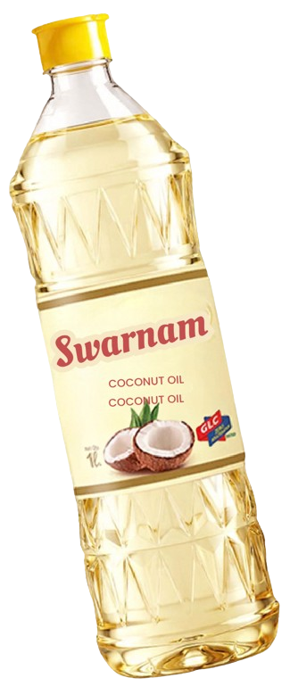
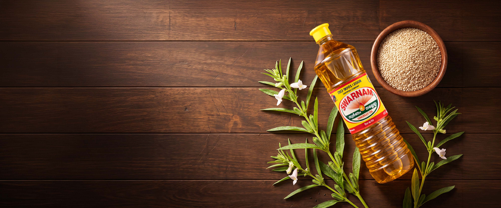

United Oil Industries
Handles core manufacturing, from milling and refining to bottling and rigorous batch-testing.
A small mill. A bag of sesame seeds. Two brothers guided purely by honest work.
That is how Swarnam Group began. Today, we continue that journey with the same values, bringing trusted food and non-food essentials to homes across Kerala and beyond.



In the 1950s, soon after Independence, Hassan and Alikunju established a modest operation on the banks of the Periyar in Aluva. Naming it United Flour & Oil Mill, they sold gingelly oil and flour, mostly in bulk to local wholesalers they knew by name.
They went deeper, not wider.
Rather than diversifying, they doubled down on oil. Renaming the company United Oil Industries, they focused almost exclusively on gingelly oil, committing to a standard of purity no other maker in Kerala was offering at scale.
In 1998, that promise was given a name: Swarnam Nallenna. It went on to become Kerala’s most trusted gingelly oil.
From a single mill, Swarnam has grown into an integrated network
of three specialised companies:
Handles core manufacturing, from milling and refining to bottling and rigorous batch-testing.
Produces custom, high-grade packaging to protect product integrity from factory to shelf.
Provides extensive distribution capabilities backed by 30+ years of regional market reach.
From raw seed selection to final retail delivery, every single phase — milling, refining, bottling, and logistics — remains entirely under our roof.
The journey began with a local mill, close relationships and a simple commitment to making things well. That focus still guides the way we work, even as we grow into new categories.
Discover Our HeritageHassan and Alikunju established United Flour & Oil Mill near the Periyar in Aluva.

United Oil Industries deepened its expertise in gingelly oil manufacturing.

The commitment to traditional oil-making took on the Swarnam name.

Manufacturing, packaging and distribution work together to serve everyday needs.
Paying attention from raw ingredients and production through to packaging.
Keeping Kerala’s familiar flavours and everyday rituals close to heart.
Growing with the trust of customers, partners and communities.